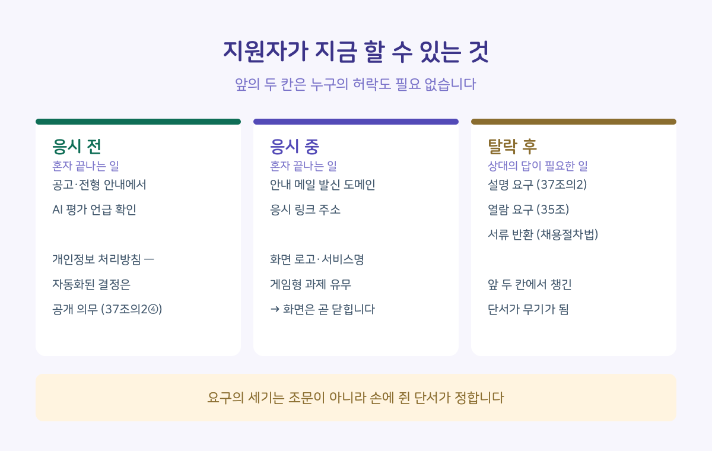
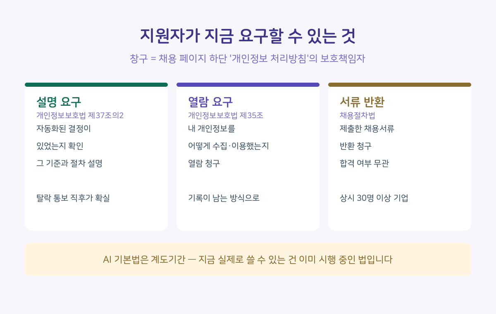

AI 면접까지 다 치르고 나서 돌아온 건 "아쉽지만"으로 시작하는 메일 한 통. 왜 떨어졌는지는 아무도 말해주지 않습니다.
이 글은 그 뒤에 무엇을 요구할 수 있는지도 다룹니다. 다만 순서를 바꿔 시작하겠습니다. 탈락한 뒤에 하는 일은 상대가 답을 해줘야 완성됩니다. 반면 응시 전과 응시 중에 하는 일은 혼자서 끝납니다. 그리고 나중에 요구할 때 손에 쥐고 있는 건, 그때 챙겨둔 것들뿐입니다.
■ 응시 전과 응시 중에, 혼자 할 수 있는 것
하나, 채용공고와 전형 안내를 봅니다. AI 면접, AI 역량검사, 온라인 인성검사 같은 표현이 있는지. 있다면 그게 어느 전형 단계인지.
둘, 채용 페이지 하단의 '개인정보 처리방침'을 엽니다. 공고에 아무 말이 없어도 AI를 안 쓴다는 뜻은 아닙니다. 그런데 여기에는 적혀 있어야 합니다. 개인정보보호법 제37조의2 제4항은 자동화된 결정을 하는 경우 그 기준과 절차, 개인정보가 처리되는 방식을 정보주체가 쉽게 확인할 수 있도록 공개하도록 정하고 있습니다. 시행령은 더 구체적입니다 — 자동화된 결정이 이루어진다는 사실, 그 목적과 대상이 되는 지원자의 범위, 사용되는 주요 개인정보의 유형까지 홈페이지 등에 공개해야 합니다. 개인정보 보호책임자와 문의 창구도 반드시 적혀 있습니다.
그래서 이건 뒤져서 운 좋으면 찾는 일이 아니라, 있어야 할 것이 있는지 확인하는 일입니다. 있으면 정보를 얻은 것이고, AI 전형을 하면서 아무 언급이 없다면 그 사실 자체가 나중에 쓸 수 있는 근거가 됩니다.
셋, 응시 안내 메일이 오면 두 가지를 봅니다. 발신 주소의 도메인, 그리고 응시 링크의 주소. 회사 도메인이 아니라 처음 보는 도메인이라면, 외부 업체의 도구를 거쳐 평가받는다는 뜻입니다.
넷, 응시 화면에 들어가면 기억해둡니다. 화면에 뜬 로고와 서비스 이름, 게임 형태의 과제가 있었는지. 나중에 "내가 받은 게 어떤 자동화된 결정이었는지"를 특정할 수 있는 단서는 사실상 이것뿐입니다. 회사는 먼저 알려주지 않고, 응시 화면은 전형이 끝나면 닫힙니다.

이 네 가지는 전부 누구의 허락도 필요 없습니다. 그리고 둘째 항목은 지금 바로 됩니다 — 관심 있는 회사 채용 페이지 하나 열어서 맨 아래 '개인정보 처리방침'을 눌러보세요. 자동화된 결정 항목이 있는지 찾는 데 5분이면 충분합니다.
■ 그럼 탈락한 뒤에는 뭘 요구할 수 있나요
여기서 한 가지 짚고 갑니다. 올해 1월 22일 AI 기본법이 시행됐지만 최소 1년 이상의 계도기간이 잡혀 있고, 어떤 AI가 '고영향'인지 세부 기준도 아직 고시로 확정되지 않았습니다(지난 7월 21일 시행령 개정에도 담기지 않았습니다). 그래서 "AI 기본법에 따라 요구합니다"라는 카드는 지금은 아직 무딥니다.
대신 이미 쓸 수 있는 법이 있습니다. 개인정보보호법 제37조의2, 2024년 3월부터 시행 중입니다. 사람 개입 없이 완전히 자동화된 결정이 나에게 중대한 영향을 미쳤다면, 그 결정을 거부하거나 설명을 요구할 수 있다는 조항입니다. 채용 응시는 '계약 체결 과정'으로 해석될 여지가 있어 거부권은 제한될 수 있고, 그래서 지원자의 실전 카드는 '설명 요구' 쪽입니다.
정리하면 카드는 세 장입니다.
1. 설명 요구 — 내 전형에 자동화된 결정이 있었는지, 어떤 기준과 절차로 판단됐는지. (개인정보보호법 제37조의2)
2. 열람 요구 — 기업이 내 개인정보를 어떻게 수집·이용했는지. (개인정보보호법 제35조)
3. 서류 반환 요구 — 제출한 채용서류를 돌려달라고. 합격 여부와 무관하며 상시근로자 30명 이상 기업에 적용됩니다. (채용절차법)

■ 어디에, 어떻게 보내나요
앞서 열어본 '개인정보 처리방침'의 보호책임자 창구로 보냅니다. 이메일처럼 기록이 남는 방식이 좋습니다.
내용은 두 줄이면 됩니다. "이번 전형에서 완전히 자동화된 결정이 있었는지 확인을 요청합니다. 있었다면 그 기준과 절차에 대한 설명을 요청합니다." 여기에 응시 화면에서 본 서비스 이름이나 응시 링크 도메인을 덧붙이면, 회사가 "그런 전형 없다"고 넘기기 어려워집니다.
그리고 미루지 않는 게 좋습니다. 지원자 개인정보는 보관기간이 지나면 파기되기 때문에, 한참 뒤에는 "이미 파기했다"는 답이 돌아올 수 있습니다. 탈락 통보를 받은 직후가 가장 확실합니다.
■ 어디까지 통할까요
여기까지 읽고 "그래서 답을 해주긴 하나요"가 궁금하실 겁니다. 한 번에 말씀드리면, 벽이 셋 있습니다. 기업이 '사람이 최종 판단했다'고 하면 이 조항의 적용이 애매해지고, 평가 기준의 상세는 영업비밀을 이유로 공개하지 않을 수 있으며, 답이 아예 오지 않는 경우도 있습니다.
그래서 앞부분이 중요합니다. 응시 화면에서 본 서비스 이름과 도메인이 있으면 "사람이 판단했다"는 답에 되물을 수 있습니다. 아무것도 없으면 되물을 것이 없습니다. 요구의 세기는 조문이 아니라 손에 쥔 단서가 정합니다.
그리고 답이 오지 않는 경우, 그건 막다른 길이 아니라 다음 단계의 입구입니다. 무응답 자체가 다음 편에서 다룰 경로의 출발점이 됩니다.
■ 찍힐까 봐 걱정된다면
사실 벽이 하나 더 있습니다. 요구했다가 다음 지원에서 불이익을 받지 않을까 하는 걱정입니다. 이 걱정을 눌러줄 조항은 찾지 못했습니다 — 권리 행사를 이유로 한 불이익을 명시적으로 금지하는 규정은 채용 장면에는 없습니다. 그래서 "괜찮으니 하세요"라고는 못 씁니다. 대신 부담이 다른 세 단을 구분할 수는 있습니다.
응시 전과 응시 중의 확인은 회사가 알 수 없는 행동입니다. 처리방침을 열어본 걸 아는 건 나뿐입니다. 이 글이 그걸 맨 앞에 둔 이유입니다. 서류 반환 요구는 법에 절차가 박혀 있는 가장 건조한 요구고, 설명 요구는 재지원 생각이 없는 회사부터 시작하면 됩니다. 아직 가고 싶은 회사에 안 보내는 것도 합리적인 계산입니다.
어디까지 할지는 각자의 계산이 맞습니다. 이 글이 하려는 건 그 계산에 들어갈 정보를 채우는 것까지입니다.
■ 취준생에게 이게 왜 중요한가요
솔직하게 마무리하겠습니다. 이 글의 카드들은 회사를 움직이지 못할 수도 있습니다. 그런데 이 글이 정말 겨냥하는 건 회사가 아니라 깜깜함입니다. 왜 떨어졌는지 모르는 채로 남으면, 결국 남는 건 자책뿐입니다 — 내가 부족했나, 표정이 문제였나. 어떤 도구가 어떤 방식으로 나를 평가했는지 아는 사람은, 적어도 엉뚱한 데를 탓하면서 다음 전형을 걷지 않습니다.
응시 전 5분의 확인은 회사를 바꾸는 일이 아니라, 그걸 아는 사람이 되는 일입니다. 그리고 그건 오늘, 아무 위험 없이 됩니다.
보냈는데 답이 없다면, 그때부터가 다음 편입니다. 다음 편이 이 시리즈의 마지막입니다.
근거: 개인정보 보호법 제35조·제37조의2와 같은 법 시행령, 채용절차의 공정화에 관한 법률, AI 기본법 시행·계도기간 관련 정부 발표 — 원문 대조, 2026.8.25. 재확인. 이 글은 정보 제공 목적이며 법률 자문이 아닙니다. 개별 사안은 전문가 상담이 필요합니다.
이 글의 법 조항들은 7월에 확인하고, 올리기 전인 8월 25일에 전부 다시 확인했습니다. 한 달 사이 바뀐 것은 없었고, 고영향 기준 고시는 여전히 나오지 않았습니다. "요구했다가 불이익 받으면 어쩌나"를 눌러줄 조항도 찾아봤는데, 찾지 못해서 본문에 그렇게 적었습니다.